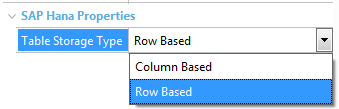

This document will not provide detailed information about this DBMS (more info here); however, a brief introduction to some of its main features will be included.
SAP HANA is an “in-memory relational database management system.” Actually, SAP defines it as something more comprehensive (in-memory data platform) that can be installed on-premise or in the cloud, and whose core is the in-memory relational database.
In SAP HANA, all data is available in the “main memory”, thus avoiding disk access delays. However, data is stored on disk nonetheless in case of potential catastrophic errors. This doesn't negatively impact performance because the necessary disk backup operations are made in asynchronous mode as background tasks.
SAP HANA runs on multi-core CPUs with fast communications between processor cores that contain terabytes of main memory. As you can see, it must be run on certain servers; therefore, it is either run in the cloud or installed on servers certified by SAP to this end.
Two types of tables are supported: Row stored and Column stored. Even though it has been specially optimized to perform some operations over column-stored tables (in addition to offering, for this kind of tables, highly efficient compression), this option doesn't always provide the best performance. For example, to retrieve all the fields of a table row (operations of Select * from type), the best performance is obtained if the table is stored by rows because reconstructing an entire row from a column-stored table is one of the most expensive operations.
If a table is accessed mostly to retrieve a few columns from a large number of records, column storage provides better performance.
The type of table can be changed from row stored to column stored and vice versa. In GeneXus, it is up to the developer to make this decision.
GeneXus 15 and SAP HANA database data store
Prerequisites
The following has to be installed:
Once HANA Client has been installed, when installing HANA NET Driver, it must point to where the Client was installed:
..\HANA Net Driver\v3.5>SetupNet.v3.5.exe /i /hl "C:\Program Files\sap\hdbclient"
Installing SAP HANA Studio as manager to work with the DB is recommended.
Setting up the data store in GeneXus
Database name: it is left blank; the HANA instance must be created outside.
For GeneXus, given a SAP HANA instance, to create the tables in a different catalog for each KB, the catalog name must be added to the Database Schema property of the Data store.
Otherwise, errors may occur between different KBs because for all those that no Database Schema is indicated, it will create the tables in the default System catalog.
Table Property
At the table level, in the SAP Hana Properties section, there is a property called Table Storage Type. It allows indicating if the table that will be created by GeneXus will be stored by row or by column.
Its possible values are Row Based (default value) or Column Based.

Note
A trial version can be obtained to try SAP HANA DB running from the cloud. For more information, read SAP HANA Enterprise Cloud/Cloud Appliance Library.
See also
How to use SAP HANA database on SAP Business Technology Platform
| Backlinks | |
| .NET Core Generator Requirements | Data types of attributes in the DBMS |
| GeneXus and the DBMSes |